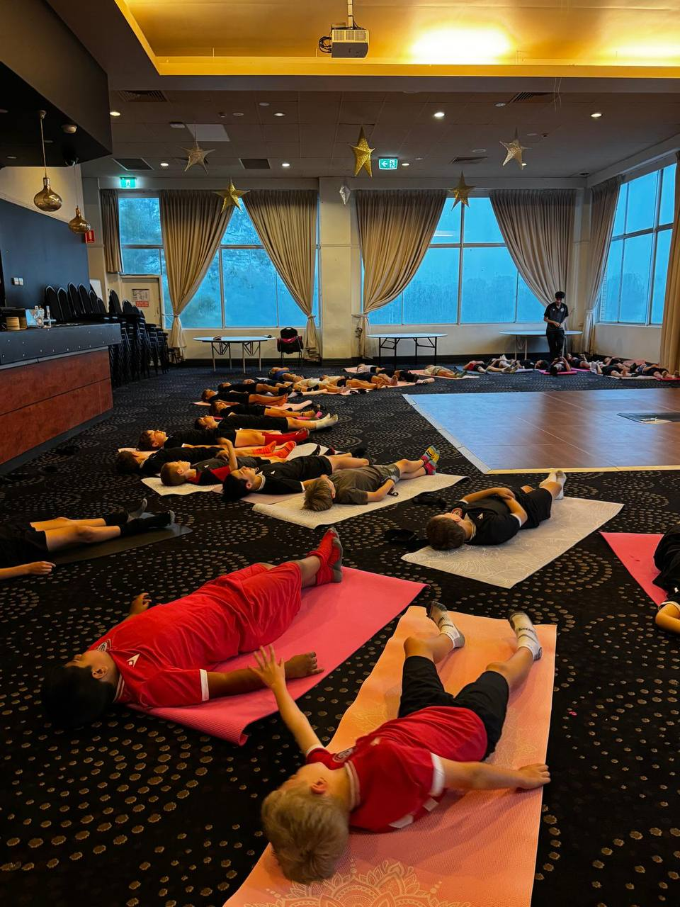
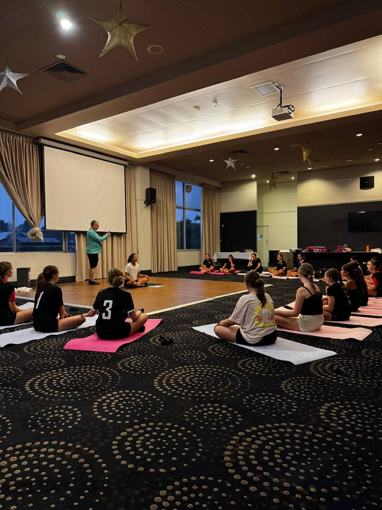

Soccer demands explosive speed, sharp agility, laser focus and the mental toughness to perform under pressure. But what if there was one training tool that could improve all of these — while also preventing injuries and building confidence?
That tool is yoga. And it's no longer a secret — from the English Premier League to the Matildas, elite footballers around the world are making yoga a core part of their training routine.
At Yogi Club, we bring tailored yoga sessions directly to junior football clubs, helping young athletes unlock their full potential through movement, breathwork and mindfulness.
The Benefits of Yoga for Young Soccer Players
Injury Prevention
Tight hamstrings, hip flexors and ankles are the most common sources of soccer injuries. Yoga systematically stretches and strengthens these areas, keeping young players on the field — not on the sideline.
Flexibility & Range of Motion
Greater flexibility means longer strides, more powerful kicks and smoother movement on the ball. Yoga opens up the hips, shoulders and spine in ways that traditional stretching simply can't.
Balance & Stability
From one-legged poses to core-strengthening flows, yoga builds the deep stabiliser muscles that help players change direction, shield the ball and stay on their feet during tackles.
Core Strength
A strong core is the foundation of every movement on the field. Yoga builds functional core strength that transfers directly to sprinting, shooting and aerial duels.
Mental Focus & Composure
Breathing techniques and mindfulness training help young players manage pressure, stay calm during penalty kicks and maintain concentration for the full 90 minutes.
Recovery & Rest
Post-match yoga sessions reduce muscle soreness, speed up recovery and teach players how to switch off and rest properly — a skill many young athletes struggle with.

What the Pros Say
Yoga isn't just for beginners. The world's best soccer players rely on it to stay at the top of their game:
"Yoga keeps me flexible and injury-free. It's become an essential part of my training."
"I do yoga every day. It helps with my balance, my focus and my recovery between games."
Ryan Giggs famously credited yoga with extending his career at Manchester United into his 40s. Cristiano Ronaldo, Zlatan Ibrahimovic and the entire German national team have all incorporated yoga into their training programs.
What a Yogi Club Soccer Session Looks Like
Our sessions are designed specifically for young athletes — dynamic, engaging and football-focused. No sitting still for an hour. This is yoga that athletes actually enjoy.
- Dynamic Warm-Up (10 min) — Sun salutations and movement flows to activate muscles, increase heart rate and prepare the body for action
- Strength & Balance (15 min) — Warrior poses, tree pose, chair pose and core work that directly translates to on-field performance
- Flexibility & Recovery (10 min) — Deep stretches targeting hamstrings, hip flexors, quads and ankles — the key areas for football players
- Breathwork & Mindfulness (10 min) — Guided breathing techniques for focus, composure and relaxation. Teaching young players how to manage their emotions and perform under pressure

Why Clubs Choose Yogi Club
- We come to you — at your club, at your training ground, at your schedule
- All equipment provided — yoga mats, props, music — we bring everything
- Tailored to football — every session is designed with soccer-specific needs in mind
- Experienced instructor — qualified yoga teacher with a Working With Children Check
- Flexible packages — one-off sessions, pre-season programs, or ongoing weekly classes
Marrickville FC recently brought Yogi Club to their teen soccer players — and the results speak for themselves. Improved flexibility, better focus during games and a team that genuinely enjoys their yoga sessions. It's been a game-changer for their young athletes.
Whether it's a pre-season flexibility program, weekly recovery sessions or a one-off team bonding experience, we'll create a program that fits your club's needs and schedule.
Ready to Give Your Team the Edge?
Book a yoga session for your football club today. Your players will thank you.
Get in Touch →